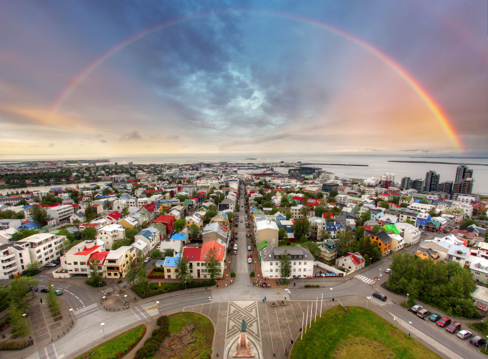

Reykjavik is the beautiful capital of Iceland. There are an abundance of experiences to be had here. Whale watching, museums, tours, national parks and volcano views are just some of the experiences that await you in Iceland.

Click here to listen to a short seascape.
The museums in Iceland have a unique quality, they can be historic and educational and very fun. Beautiful and serene doesn’t cover the beauty of Iceland national parks. Laugardalur Valley Park, Ellioaardalur Park, Thingvellir National Park, Pingvellir National Park and Videy Island Park are some of the more popular parks in Iceland.
There are different kinds of tours whether you are looking for something slow and peaceful or fast and exciting. Whale watching, taxi tours, off-road tours and self-tours are just a few of the tours Reykjavik offers.
Click here to watch a travel guide whale watching video! Whale Watching
This is a fictional site for educational purposes that does not offer travel.